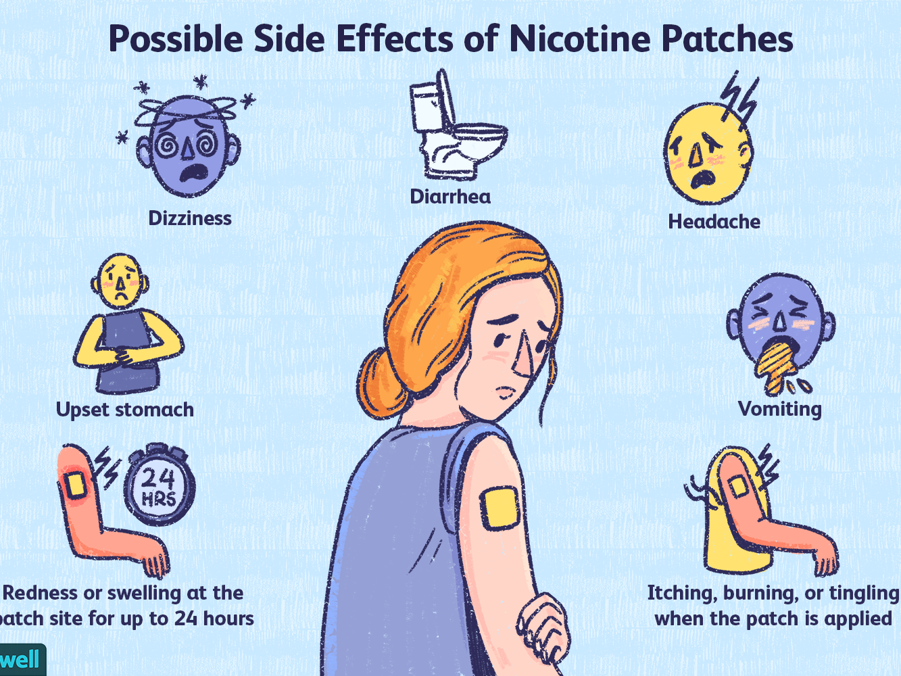

While using vapes may be healthier than smoking traditional cigarettes, users still face health risks. E-cigarette use, or "vaping," has been linked to lung, heart, brain, and gum illnesses.Vaping can lead to many health complicancions including diseases, tumors ,etc. Teens can slower their brain developemnt ,acquire addictive habits and develop mood disorders due to vaping.Due to its fairly recent rise in popularity, unfortunately many of the long-term health effects of vaping have yet to be diagnosed and studied.But what is clear is that e-cigarettes have been found to have chemicals and particles that have been linked experimentally to lung disease, including asthma and chronic obstructive pulmonary disease (COPD). Vaping can also cause lung inflammation, which has been linked to chronic lung disease as well.
Nicotine is equally dangerous for adults and has a negative impact on heart health. This chemical can stay in your body for six to eight hours depending on how often you smoke. Also, as with most addictive substances, there are some side effects of withdrawal. Apart from local actions, the target organs are the peripheral and central nervous systems. In severe poisoning, there are tremors, prostration, cyanosis, dypnoea, convulsion, progression to collapse and coma. Even death may occur from paralysis of respiratory muscles and/or central respiratory failure with a LD50 in adults of around 30-60 mg of nicotine. In children the LD50 is around 10 mg.
Nicotine can :
